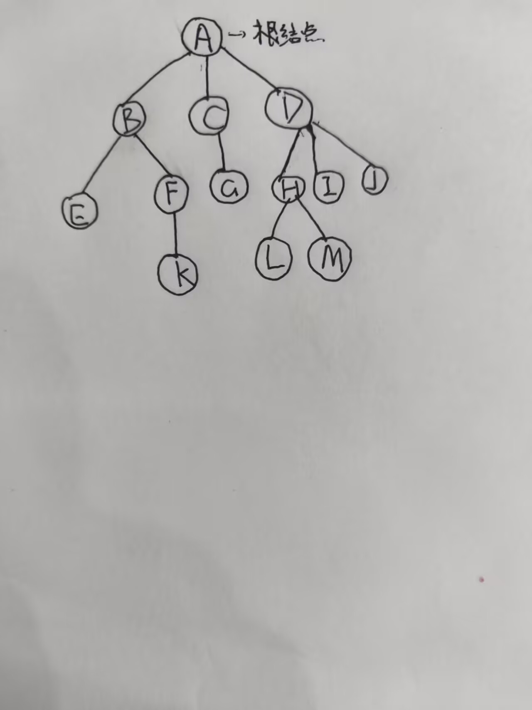
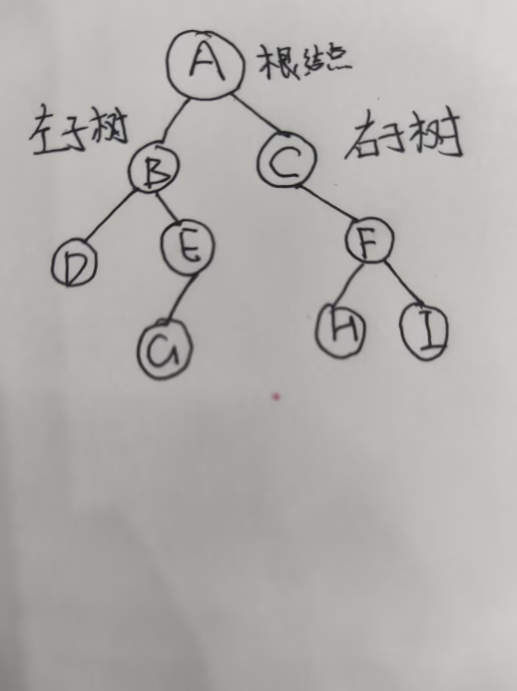
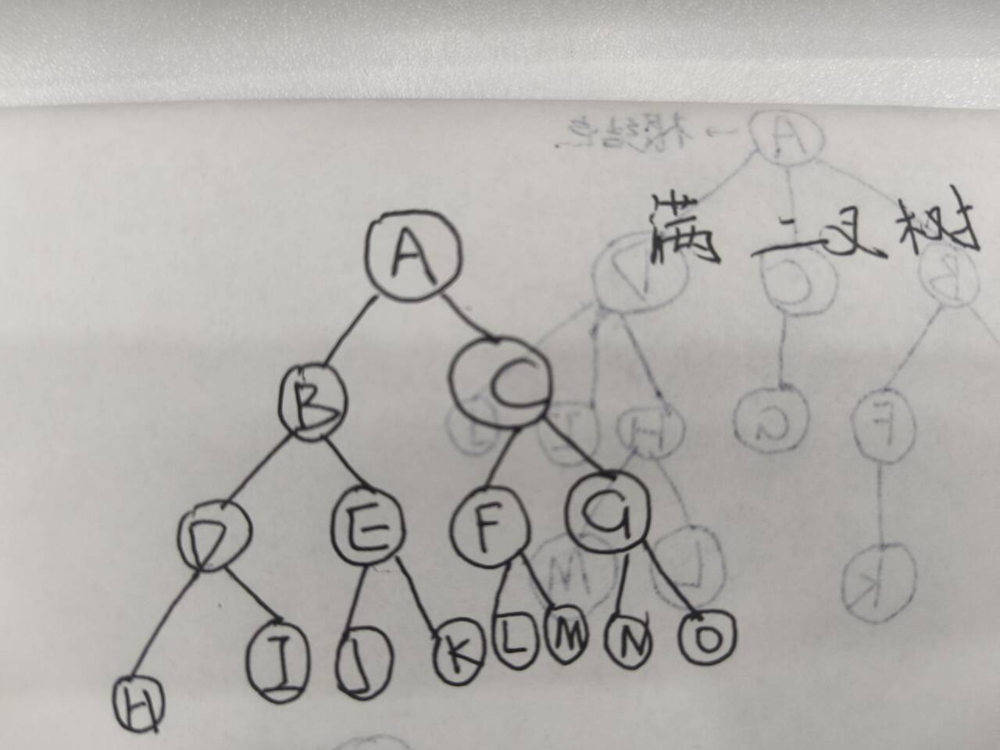
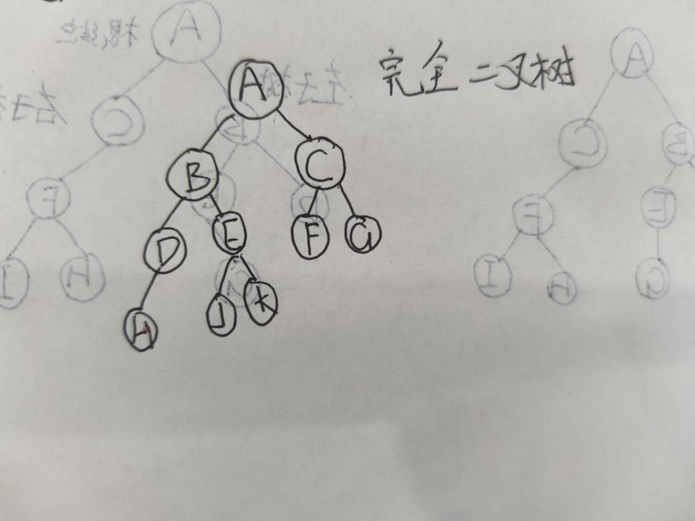
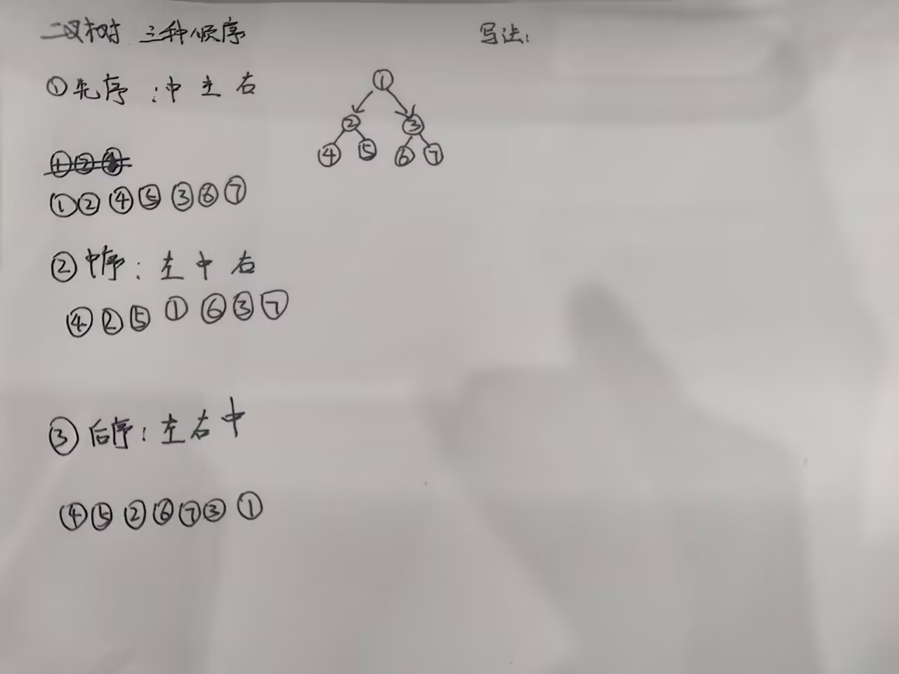
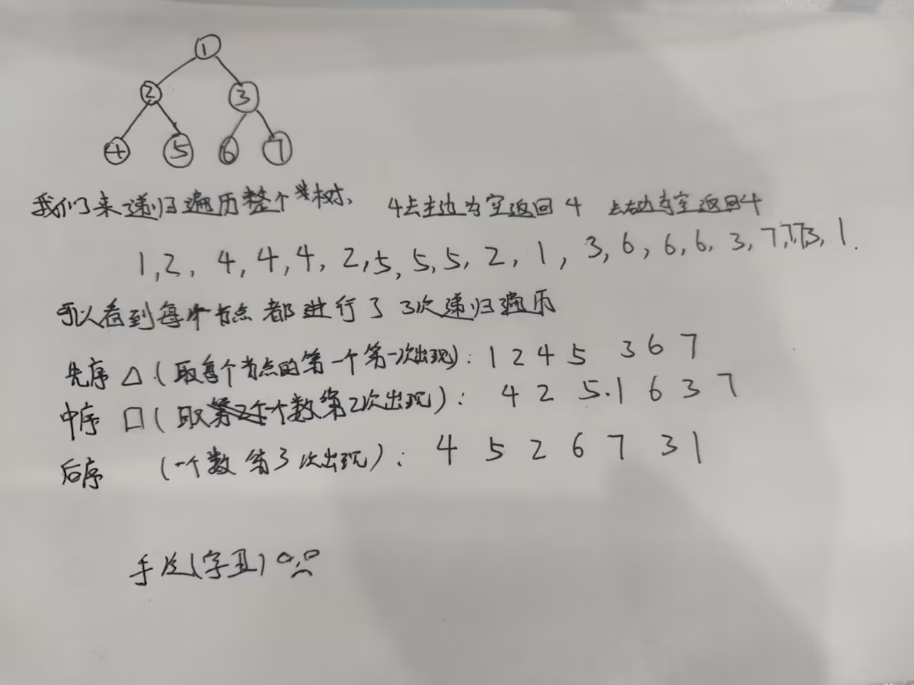

树：
在学习二叉树之前我们先了解一下树的基本概念。
树的定义：
n个节点构成的有限集合
n=0时，树为空树。
n>0时，树有且只有一个根结点。

每个子集也是树，被称为根结点的子树。
1.树的高度=树的深度=树的层数
2.结点的深度：他所在的层次
3.结点的高度：以他为根的子树的层数
4.结点的度：孩子的个数
5.叶结点：度为0的结点
6.分支结点：度大于0的结点
7.分支结点：度大于0的结点
树分为有序树和无序树。
各个节点的子树从左到右有次序，不能互换，称为有序树。否则称为无序树。
树的性质：
节点数n=边数+1=所有结点数之和+1
我们来了解二叉树。
二叉树：树中每个结点最多有两个分支的树。

下面我们认识一下两种特殊的二叉树。
1.满二叉树：每个结点都有两个子结点的二叉树。

满二叉树：所有分支结点都有两个子结点。所有叶结点都在最底层。只有度为0的结点和度为2的结点。
2.完全二叉树：每个结点都有两个子结点的二叉树。

完全二叉树：除了最后一层，其他层的结点都有两个子结点。最后一层的结点都从左到右连续排列。但是最后一层可以没有满。
我们接下来学习一下如何表示树：
二叉树的表示
我们一般用结构体+左右指针来表示二叉树。
struct TreeNode {
int val; // 节点的值
TreeNode* left; // 左孩子
TreeNode* right;// 右孩子
TreeNode(int x) : val(x), left(NULL), right(NULL) {}
};
多叉树/一般树的表示
如果是一颗无向树，我们需要双向建边。带权树的表示
vector+pair
下面我们写一道简单的题二叉树的题目：遍历二叉树
给你一个二叉树n个节点，后面n行第一个字符表示根结点，后面两个字符表示左子结点和右子结点。
我们用*表示空结点。
请输出前序遍历的结果。
二叉树的遍历：
分为三种情况：
1.先序遍历
2.中序遍历
3.后序遍历

我们也是通过递归的方式来实现遍历：
二叉树初始化：
struct TreeNode {
int val;
TreeNode *left;
TreeNode *right;
treenode(int x){
val = x;
left = right = nullptr;
}
};
// 先序遍历(java)
public static void preorder(TreeNode head){
if (head == null)return;
System.out.println(head.val);
preorder(head.left);
preorder(head.right);
}
//先序遍历(c++)
#include <iostream>
void preorder(TreeNode* head) {
if (head == nullptr) return;
std::cout << head->val << "\n"; // 使用 "\n" 比 std::endl 更快
preorder(head->left);
preorder(head->right);
}
// 中序遍历(java)
public static void inorder(TreeNode head){
if (head == null)return;
inorder(head.left);
System.out.println(head.val);
inorder(head.right);
}
//中序遍历(c++)
#include <iostream>
void inorder(TreeNode* head) {
if (head == nullptr) return;
inorder(head->left);
std::cout << head->val << "\n";
inorder(head->right);
}
// 后序遍历(java)
public static void postorder(TreeNode head){
if (head == null)return;
postorder(head.left);
postorder(head.right);
System.out.println(head.val);
}
//后序遍历(c++)
#include <iostream>
void postorder(TreeNode* head) {
if (head == nullptr) return;
postorder(head->left);
postorder(head->right);
std::cout << head->val << "\n";
}
#include <iostream>
// 假设 TreeNode 结构体已经定义好
struct TreeNode {
int val;
TreeNode *left;
TreeNode *right;
TreeNode(int x) : val(x), left(nullptr), right(nullptr) {}
};
void f(TreeNode* head) {
// 如果节点为空，直接返回
if (head == nullptr) return;
// ---------- 位置 1 ----------
// 在这里写操作代码，就是【前序遍历】（根 -> 左 -> 右）
// 例如：cout << head->val << " ";
f(head->left); // 递归遍历左子树
// ---------- 位置 2 ----------
// 在这里写操作代码，就是【中序遍历】（左 -> 根 -> 右）
// 例如：cout << head->val << " ";
f(head->right); // 【注意】这里原代码写成了 f(head,right)，应该是 f(head->right)
// ---------- 位置 3 ----------
// 在这里写操作代码，就是【后序遍历】（左 -> 右 -> 根）
// 例如：cout << head->val << " ";
}

小 A 的二叉树先序遍历
题目描述
小 A 有一棵包含 n 个结点的二叉树，结点编号为 1 ~ n，其中 1 号结点是整棵树的根。
小 A 会用以下方式把这棵二叉树的边告诉你：
他会按任意顺序告诉你 n-1 条有向边。每条边以 u v 的形式给出，表示结点 u 是结点 v 的父亲。
特别地：
- 如果结点 u 只有一个孩子，那么这个孩子一定是它的左孩子。
- 如果结点 u 有两个孩子，那么他告诉你的第一个孩子会被当作左孩子，第二个告诉你的孩子会被当作右孩子。你可以保证 u 不会有超过两个以上的孩子。
- 保证不会告诉你重复的边，且所有的边最终能连成一棵以 1 为根的合法二叉树。
现在，请你输出这棵二叉树的先序遍历序列。
输入格式
第一行包含一个整数 n，表示二叉树的结点个数。
接下来 n-1 行，每行包含两个整数 u, v，表示结点 u 是结点 v 的父亲（即 v 是 u 的孩子）。
输出格式
输出一行，包含 n 个整数，表示这棵二叉树先序遍历的结点编号。两个整数之间用一个空格隔开。
样例 #1
输入 #1
5 1 2 1 3 2 4 2 5
输出 #1
1 2 4 5 3
样例 #2
输入 #2
4 2 4 3 5 1 2 1 3
输出 #2
1 2 4 3 5
数据范围与提示
- 对于 100% 的数据，保证 1 ≤ n ≤ 105。
- 保证每一个输入数据，都严格符合题目描述中“第一个孩子为左，第二个为右”的规则。
#include<bits/stdc++.h>
using namespace std;
struct TreeNode{
int val;
TreeNode *left;
TreeNode *right;
TreeNode(int x) : val(x), left(nullptr), right(nullptr) {}
};
void dfs(TreeNode* head){
if (head == nullptr) return;
// 先序遍历
std::cout << head->val << " ";
dfs(head->left);
dfs(head->right);
}
int main(){
ios::sync_with_stdio(0);
cin.tie(0);
cout.tie(0);
int n;
cin >> n;
vector<TreeNode*> nodes(n+1,nullptr);
for (int i = 1; i < n -1 ; i++){
int a , b;
cin >> a >> b;
if (nodes[a] == nullptr) nodes[a] = new TreeNode(a);
if (nodes[b] == nullptr) nodes[b] = new TreeNode(b);
if (nodes[a]->left == nullptr) nodes[a]->left = nodes[b];
else nodes[a]->right = nodes[b];
}
if (n > 0 && nodes[1] != nullptr) dfs(nodes[1]);
return 0;
}
TreeNode(int x) : val(x), left(nullptr), right(nullptr) {}
也可以写成：
定义了一个构造函数，当你创建一个新的树节点（TreeNode）时，把传入的值 x 赋给节点本身的值 val，并且把它的左孩子 left 和右孩子 right 都默认设为空指针（nullptr）。
如果是中序遍历或者后序遍历呢？
其实我们只需要更改dfs里面cout<
//中序遍历
void dfs(TreeNode* head){
if (head == nullptr) return;
dfs(head->left);
cout << head->val << " "; // 【位置 2】左边全部走完了，再打印
dfs(head->right);
}
//后序遍历
void dfs(TreeNode* head){
if (head == nullptr) return;
dfs(head->left);
dfs(head->right);
cout << head->val << " "; // 【位置 3】左右两边都走完了，最后打印
}
但是这些都是标准写法不是我们打比赛的时候会用的。（学了一下午给学长看成果被嘲笑了）
下面我们写一下竞赛用于建树的代码：
我们竞赛的时候图和树都是用邻接表存储的。
#include <bits/stdc++.h>
using namespace std;
const int N = 2e5 + 10; // 根据题目数据范围修改
int n;
vector<int> adj[N]; // 存图/树
int sz[N]; // 树形DP常用的：存子树大小
// u: 当前节点, fa: 它的父亲节点
void dfs(int u, int fa) {
sz[u] = 1; // 初始化子树大小包含自己
// 遍历 u 的所有邻居
for (int v : adj[u]) {
if (v == fa) continue; // 遇到父亲就跳过（防止死循环走回头路）
// 此时 v 一定是 u 的儿子！
dfs(v, u); // 递归处理儿子
sz[u] += sz[v]; // 回溯时累加子树大小（这里写具体逻辑）
}
}
void solve() {
cin >> n;
for (int i = 1; i <= n; i++) adj[i].clear(); // 多组数据必须清空 vector
for (int i = 1; i < n; i++) {
int u, v;
cin >> u >> v;
adj[u].push_back(v);
adj[v].push_back(u); // 树是无向的，双向建边
}
dfs(1, 0); // 从 1 号节点开始，它的父亲是 0（虚拟节点）
}
int main() {
ios::sync_with_stdio(0); cin.tie(0);
int t; cin >> t;
while (t--) solve();
return 0;
}
const int N = 1e5 + 10;
const int M = 2 * N;
int head[N], next[M], to[M], cnt;
void add (int a, int b){
to[cnt] = b;
next[cnt] = head[a];
head[a] = cnt++;
}
void dfs(int u, int fa){
for (int i = head[u]; i != -1; i = next[i]){
int v = to[i];
if (v == fa) continue;//遇到父节点就跳过
//只要不是父节点，那v就是u的子节点
dfs(v, u);//继续往下找子节点
}
}
int main(){
int n;
cin >> n;
memset(head, -1, sizeof (head));
cnt = 0;
for (int i = 1; i < n; i++){
int a, b;
cin >> a >> b;
add(a, b);
add(b, a);
}
dfs(1, 0);
return 0;
}